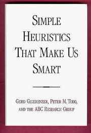

Simple Heuristics That Make Us Smart
Book·Gerd Gigerenzer, Peter M. Todd, ABC Research Group, 1999·让我们变聪明的简单启发式

Argues that in the right environment, simple rules of thumb often do as well as complex calculations. This is what the authors call ecological rationality.
- Author
- Gerd Gigerenzer, Peter M. Todd, ABC Research Group
- Year
- 1999
- Difficulty
- Advanced
- Kind
- Primary text
- Schools
- Heuristics and Biases
- Core theories
- Ecological Rationality
Editions
- English edition Simple Heuristics That Make Us Smart Gerd Gigerenzer, Peter M. Todd, and the ABC Research Group · Oxford University Press, first edition · 1999 Open Library ↗